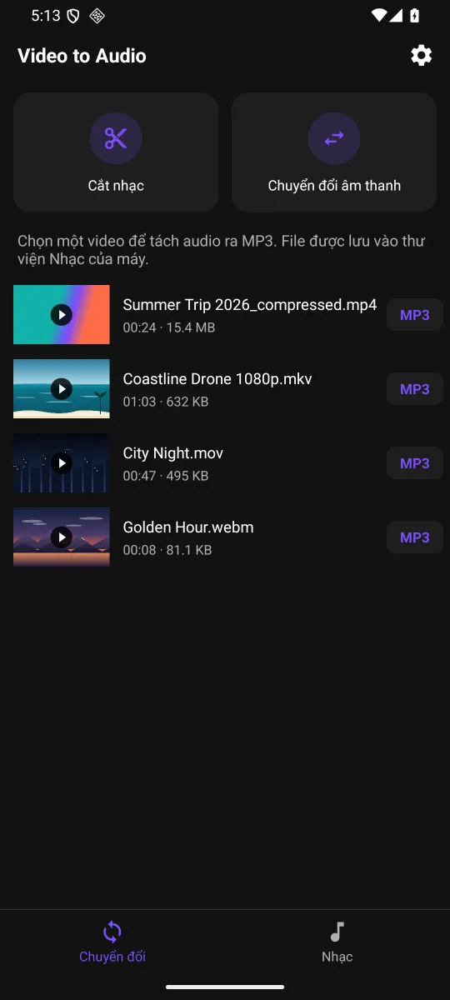
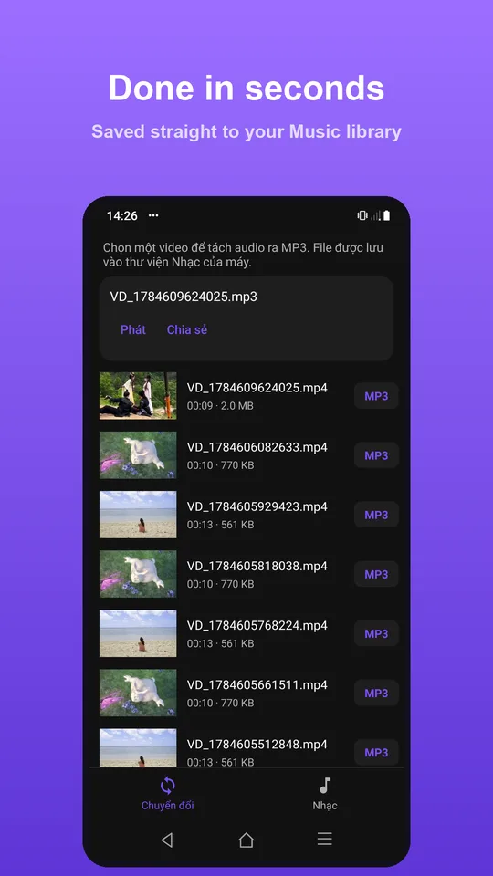

Tách âm thanh khi không có Internet: cần chuẩn bị gì?
Bạn có thể xử lý video lưu trong máy mà không phải gửi nội dung đến một website chuyển đổi. Trước chuyến đi hoặc lúc mạng yếu, hãy chuẩn bị sẵn nguồn và kiểm tra một lần xuất ngắn. Điều này giúp nhận ra sớm file chưa tải xong hoặc codec thiết bị không đọc được.
Bạn sẽ làm được gì?
Chuẩn bị video lưu trên máy và dung lượng trống để tách âm thanh bằng Video to Audio khi không có kết nối Internet.
Các bước thực hiện
- Lưu video về bộ nhớ điện thoại và mở thử khi không dựa vào bản xem trước trên đám mây.
- Kiểm tra máy còn chỗ cho file âm thanh mới và dữ liệu tạm của quá trình xử lý.
- Mở chuyển đổi, chọn định dạng cùng khoảng thời gian cần tách.
- Xuất rồi nghe lại kết quả trong tab Nhạc; bạn có thể chia sẻ khi có kết nối phù hợp sau đó.




Xử lý tại máy không có nghĩa mọi dịch vụ đều offline
Tệp media được xử lý trên thiết bị. Quảng cáo, mua hàng và một số dịch vụ hỗ trợ có thể cần Internet. Nếu một lựa chọn yêu cầu credit hoặc Premium, hãy kiểm tra điều kiện hiển thị trong app; đừng mặc định mọi thao tác nâng cao đều sẵn sàng khi mất mạng.
Câu hỏi thường gặp
Video chỉ có đường link có dùng được không?
Bạn cần tệp mà ứng dụng đọc được trên điện thoại. Luồng này không phải công cụ tải audio trực tiếp từ một liên kết website.
Trước khi bắt đầu
Các lựa chọn nâng cao, chất lượng xuất hoặc số tệp trong một lần có thể dùng credit hoặc Premium. Kiểm tra thông tin ngay trên màn thao tác trước khi chạy; ảnh giao diện có thể khác nhẹ theo phiên bản và ngôn ngữ.
Việc xử lý media diễn ra trên thiết bị. Các dịch vụ như quảng cáo và mua hàng có thể dùng mạng; xem chính sách quyền riêng tư để biết thêm.
Tải app Video to Audio